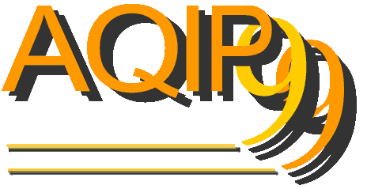

Second Workshop on Algorithms in Quantum Information Processing
Real Audio Presentations
Please Note: The talks on this page are best viewed using Real Networks' G2 Player. If the G2 Player is not available for your platform, the talks are backwards compatible with Real Networks' 5.0 player, though with reduced performance.
Andr� Berthiaume's Interview on "848" on WBEZ. WBEZ is Chicago's National Public Radio station.
9:00am Welcome and Opening Comments
Andr� Berthiaume
DePaul CTI
Helmut Epp
Dean of DePaul CTI
Chair: Tal Mor
9:05am Tutorial: Quantum Algorithms
Michele Mosca
Center for Quantum Computation
10:05am Coffee break
10:30am Tutorial: Resources Relations in Quantum Information Processing
Charles Bennett
IBM Research
11:30pmCorrelations and nonlocality
David Mermin
Cornell University
12:15pm Lunch break
Chair: Paul Benioff
2:00pmBell inequalities revisited
Asher Peres
Technion
2:45pm Quantum nonlocality without entanglement
David DiVincenzo
IBM Research
3:30pm Coffee break
Tuesday
Chair: David DiVincenzo
9:00am Decoherence -- An algorithmic point of view
Wojciech Zurek
Los Alamos National Lab
9:45amBound entanglement
Pawel Horodecki
Technical University of Gdansk
10:30am Coffee break
11:00am Unextendible product bases and bound entanglement
John Smolin
IBM Research
11:45pm Lunch break
Chair: Harry Buhrman
2:00pm Limits on the computational power of noisy quantum computers
Dorit Aharonov
Institute of Advanced Studies, Princeton
2:45pm On the problem of equilibration and the computation of correlation functions on a quantum computer
Barbara Terhal
IBM Research
3:30pm Coffee break
The remaining of the afternoon is free.
Wednesday
Chair: Richard Jozsa
9:00amTutorial: Quantum error correction
Peter Shor
AT&T Labs
10:00am Coffee break
10:30am Quantum error correction
Andrew Steane
Oxford University
11:15am Universal gates for fault-tolerant quantum computing
Vwani Roychowdhury
University of California - Los Angeles
12:00pm Lunch break
Chair: Gilles Brassard
2:00pmQuantum communication complexity
Richard Cleve
University of Calgary
2:45pm Pseudo-telepathy: power and limitation of entanglement
Alain Tapp
Universit� de Montr�al
3:30pm Coffee break
4:00pm Quantum communication complexity of sampling
Andris Ambainis
International Computer Science Institute
Thursday
Chair: Richard Cleve
9:00amQuantum NP
Alexi Kitaev
California Institute of Technology
9:45am One complexity theorist's view of quantum computing
Lance Fortnow
University of Chicago
10:30am Coffee break
11:00amAmplitude amplification
Peter H�yer
University of Aarhus
11:45am Lunch break
Chair: Louis Salvail
2:00pm Limitations of quantum computing: lower bounds via polynomials
Harry Buhrman
CWI
Paul Benioff
Argonne National Lab
3:30pm Coffee break
4:00pmPSPACE has 2-round quantum interactive proofs
John Watrous
Universite de Montreal
The remaining of the afternoon is free.
6:00pm Banquet at Maggiano’s
Attendees will meet in the lobby of the Palmer House Hilton to board the bus.
Friday
Chair: Peter Shor
9:00amEnhancing classical cryptography with quantum communication
Louis Salvail
Aarhus University
9:45am The security of quantum bit commitment schemes
Gilles Brassard
Universit� de Montr�al
10:30am Coffee break
11:00am Quantum key distribution using parametric downconversion
Tal Mor
University of California - Los Angeles
11:45amSecurity of quantum key distribution
Eli Biham
Technion
12:30pm Close of workshop